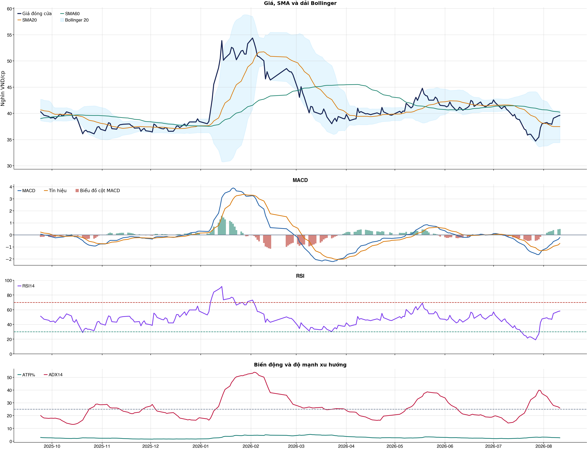
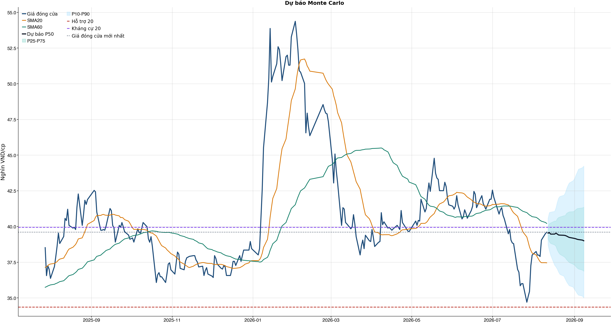
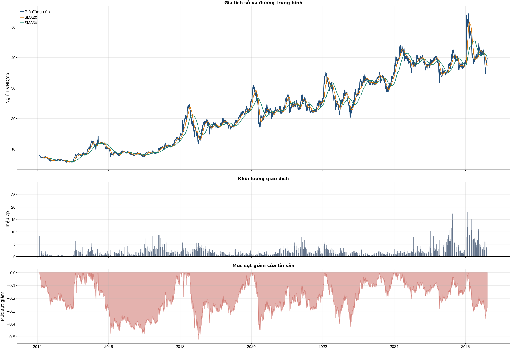

Kết quả chính
Tổng quan cơ bản
Biểu đồ kỹ thuật

Tín hiệu kỹ thuật
| Xu hướng | Cẩn thận | Giá nằm dưới SMA60. |
| MACD | Tích cực | MACD trên signal, histogram dương. |
| RSI14 | Tích cực | RSI 58.2. |
| Bollinger | Ổn định | Giá nằm trong dải Bollinger. |
| ADX | Xu hướng tăng | ADX 25.9, +DI vượt -DI. |
| Thanh khoản | Thấp | 0.48 lần trung bình. |
| Stochastic | Cực trị | %K 94.6, %D 94.3. |
So sánh mô hình
| XGBoost | 0.503 | AUC 0.575 |
| Logistic | 0.514 | AUC 0.540 |
| Đa số | 0.500 | Mốc so sánh |
Kiểm thử chiến lược ngoài mẫu sau chi phí
| Lợi nhuận ròng | -25.3% | 707 quan sát ngoài mẫu |
| Sharpe | -1.14 | Sau chi phí |
| Mức sụt giảm tối đa | -29.1% | 54 vòng giao dịch |
| Chi phí giả định | 50.0 bps | Một vòng mua và bán |
Mức độ quan trọng của đặc trưng
| return_1d | 10.32 | Mức đóng góp |
| return_2d | 9.81 | Mức đóng góp |
| day_of_week | 9.54 | Mức đóng góp |
| corr_60d | 8.81 | Mức đóng góp |
| range_pct | 8.67 | Mức đóng góp |
| excess_return_1d | 8.50 | Mức đóng góp |
| return_skew_20d | 8.34 | Mức đóng góp |
| return_20d | 8.31 | Mức đóng góp |
Điều kiện phát hành tín hiệu
| AUC của mô hình | ĐẠT | Điều kiện phát hành tín hiệu |
| Độ chính xác cân bằng của mô hình | KHÔNG ĐẠT | Điều kiện phát hành tín hiệu |
| XGBoost vượt mô hình Logistic đối chứng | ĐẠT | Điều kiện phát hành tín hiệu |
| Xác suất tăng đạt ngưỡng | KHÔNG ĐẠT | Điều kiện phát hành tín hiệu |
| Bối cảnh kỹ thuật đạt ngưỡng | ĐẠT | Điều kiện phát hành tín hiệu |
| Tỷ lệ lợi nhuận/rủi ro đạt ngưỡng | ĐẠT | Điều kiện phát hành tín hiệu |
| Dữ liệu còn mới | ĐẠT | Điều kiện phát hành tín hiệu |
| Có khối lượng vị thế hợp lệ | ĐẠT | Điều kiện phát hành tín hiệu |
| Có kết quả kiểm thử chiến lược ngoài mẫu | ĐẠT | Điều kiện phát hành tín hiệu |
| Mẫu kiểm thử chiến lược đủ lớn | ĐẠT | Điều kiện phát hành tín hiệu |
| Kiểm thử chiến lược có lợi thế ròng | KHÔNG ĐẠT | Điều kiện phát hành tín hiệu |
Quản trị rủi ro
| Rủi ro/lệnh | 1.0% | 1,000,000 VND |
| Mức dừng lỗ | 38.04 | Rủi ro mỗi cổ phiếu 1.75 |
| Mục tiêu 1 | 44.23 | Lợi nhuận/rủi ro 2.52 |
| Mục tiêu 2 | 44.23 | Dự báo/kháng cự |
Phân tích cơ bản
| P/E | 8.68 | 2026-Q2 |
| P/B | 1.49 | 2026-Q2 |
| P/S | 3.01 | 2026-Q2 |
| ROE | 17.7% | 2026-Q2 |
| ROA | 1.0% | 2026-Q2 |
| Gross margin | 67.3% | 2026-Q2 |
| Net margin | 33.8% | 2026-Q2 |
| Debt/Equity | 16.31 | 2026-Q2 |
| Current ratio | 0.00 | 2026-Q2 |
| NPL | 1.8% | 2026-Q2 |
| CASA | 20.8% | 2026-Q2 |
| Dividend yield | 0.0% | 2026-Q2 |
| Market cap | 287,562.6 tỷ | 2026-Q2 |
| Revenue Growth | 7.0% | 2026-Q2 YoY |
| Profit Growth | 20.6% | 2026-Q2 YoY |
| CAPEX | -914.3 tỷ | 2026-Q2 |
| Lợi nhuận sau thuế | 8,294.9 tỷ | 2026-Q2 |
| Tổng tài sản | 3,440,843.5 tỷ | 2026-Q2 |
| Vốn chủ sở hữu | 198,778.0 tỷ | 2026-Q2 |
Tin tức doanh nghiệp
| Trạng thái | Có dữ liệu | research_only |
| Nguồn / số bài | VCI | 50 |
| Bài đủ timestamp | 50 | Chỉ các bài này mới được phép dùng point-in-time |
| Sentiment 5 ngày | 0.00 | 1.0 bài trước cutoff |
| Phương pháp | keyword_heuristic_v1 | Research only; chưa dùng làm tín hiệu mua/bán |
Dự báo ngắn hạn
| 2026-08-12 | 39.54 | P10 38.71 / P90 40.56 |
| 2026-08-13 | 39.57 | P10 38.31 / P90 40.98 |
| 2026-08-14 | 39.47 | P10 37.99 / P90 41.01 |
| 2026-08-17 | 39.47 | P10 37.29 / P90 41.06 |
| 2026-08-18 | 39.53 | P10 37.18 / P90 41.31 |
| 2026-08-19 | 39.47 | P10 37.02 / P90 41.69 |
| 2026-08-20 | 39.41 | P10 36.81 / P90 41.99 |
| 2026-08-21 | 39.40 | P10 36.65 / P90 42.11 |
Biểu đồ dự báo

Lịch sử giá và mức sụt giảm

Báo cáo dùng để học tập và lập kịch bản, không phải khuyến nghị mua/bán.
Phân tích AI có kiểm chứng
Trạng thái quyết định: NO_EDGE
Tóm tắt: ML decision hiện giữ nguyên NO_EDGE. News Reader đã trích đoạn có nguồn của 2 bài để phân loại chủ đề (ket_qua_kinh_doanh: 1, co_tuc_va_hanh_dong_doanh_nghiep: 1, vi_mo: 1, nganh: 2, rui_ro: 1), nhưng các trích đoạn này không tạo bằng chứng mới cho quyết định đầu tư.
Kỹ thuật: Artifact kỹ thuật: bias Hồi phục / nghiêng tăng; điểm 3. Chi tiết artifact: Xu hướng: Cẩn thận (Giá nằm dưới SMA60.); MACD: Tích cực (MACD trên signal, histogram dương.); RSI14: Tích cực (RSI 58.2.); Bollinger: Ổn định (Giá nằm trong dải Bollinger.); ADX: Xu hướng tăng (ADX 25.9, +DI vượt -DI.); Thanh khoản: Thấp (0.48 lần trung bình.); Stochastic: Cực trị (%K 94.6, %D 94.3.)
Cơ bản: Artifact cơ bản: BIDV; kỳ 2026-Q2; P/E 8.68; P/B 1.49; ROE 17.7%; ROA 1.0%; Debt/Equity 16.31; Revenue Growth 7.0%; Profit Growth 20.6%.
Tin tức: Đã đọc trích đoạn giới hạn của 2 bài; phân nhóm rule-based: ket_qua_kinh_doanh: 1, co_tuc_va_hanh_dong_doanh_nghiep: 1, vi_mo: 1, nganh: 2, rui_ro: 1. Tác động cần kiểm chứng: Đối chiếu doanh thu/lợi nhuận trong bài với BCTC và kỳ vọng thị trường. Kiểm tra ngày GDKHQ, tỷ lệ, nguồn chi trả và nguy cơ pha loãng trước khi đánh giá tác động. Đối chiếu thời điểm công bố và kênh tác động lãi suất/tỷ giá với mô hình kinh doanh. So sánh tín hiệu ngành với thị phần, nhu cầu và đối thủ trước khi suy luận cho riêng doanh nghiệp. Xác minh công bố chính thức, phạm vi ảnh hưởng và khả năng định lượng rủi ro. Đây không phải sentiment hay dự báo tác động giá.
Live research: Live snapshot lấy lúc 2026-08-11T04:57:36.017006+00:00; News Reader đọc được 2 bài. ML có 3 lý do guard và vẫn là NO_EDGE. Không dùng tin live để train/backtest.
Rủi ro cần kiểm chứng
- ML guard: Balanced accuracy 0.503 < 0.520
- ML guard: Probability 54.5% < 55.0%
- ML guard: Lợi thế OOS ròng không đạt: return=-0.2526562499999999, Sharpe=-1.1429277374127638
- News Reader: Đối chiếu doanh thu/lợi nhuận trong bài với BCTC và kỳ vọng thị trường.
- News Reader: Kiểm tra ngày GDKHQ, tỷ lệ, nguồn chi trả và nguy cơ pha loãng trước khi đánh giá tác động.
- News Reader: Đối chiếu thời điểm công bố và kênh tác động lãi suất/tỷ giá với mô hình kinh doanh.
- News Reader: So sánh tín hiệu ngành với thị phần, nhu cầu và đối thủ trước khi suy luận cho riêng doanh nghiệp.
- News Reader: Xác minh công bố chính thức, phạm vi ảnh hưởng và khả năng định lượng rủi ro.
- Chỉ lưu trích đoạn giới hạn để kiểm chứng nguồn; không lưu hay hiển thị toàn văn bài báo.
- Phân nhóm là keyword rule-based để định tuyến research, không phải sentiment hay dự báo tác động giá.
- Dữ liệu News Reader chỉ phục vụ research/report; không dùng làm feature train/backtest khi chưa có lịch sử available_at point-in-time.
- Tin live/trích đoạn cần mở URL gốc để kiểm chứng bối cảnh, số liệu và thời điểm trước khi sử dụng.
Bằng chứng
- ML decision artifact: NO_EDGE. Balanced accuracy 0.503 < 0.520
- ML decision artifact: NO_EDGE. Probability 54.5% < 55.0%
- ML decision artifact: NO_EDGE. Lợi thế OOS ròng không đạt: return=-0.2526562499999999, Sharpe=-1.1429277374127638
- News Reader [Chứng khoán DNSE]: Quyết định 40 mở sóng cổ phiếu vốn Nhà nước: Chuyên gia chỉ cách chọn doanh nghiệp - Chứng khoán DNSE | nhóm: nganh (2026-08-10T01:32:00+00:00)
- News Reader [MoneyF]: BIDV sắp phát hành gần 500 triệu cổ phiếu, vốn điều lệ tiến sát 78.000 tỷ đồng - MoneyF | nhóm: ket_qua_kinh_doanh, co_tuc_va_hanh_dong_doanh_nghiep, vi_mo, nganh, rui_ro (2026-08-06T05:45:00+00:00)
Báo cáo chỉ tổng hợp artifact đã lưu để nghiên cứu; không phải khuyến nghị mua/bán. Quyết định và vị thế vẫn bị khóa theo signal_decision.json.
Tin web đã lấy
| Nguồn | Tiêu đề | Thời điểm | Link |
|---|---|---|---|
| diendandoanhnghiep.vn | Ngân hàng nhóm Big 3 trước thềm nâng tỷ lệ sở hữu vốn Nhà nước - diendandoanhnghiep.vn | 2026-08-07T21:04:01+00:00 | Mở nguồn |
| Chứng khoán DNSE | Quyết định 40 mở sóng cổ phiếu vốn Nhà nước: Chuyên gia chỉ cách chọn doanh nghiệp - Chứng khoán DNSE | 2026-08-10T01:32:00+00:00 | Mở nguồn |
| MoneyF | BIDV sắp phát hành gần 500 triệu cổ phiếu, vốn điều lệ tiến sát 78.000 tỷ đồng - MoneyF | 2026-08-06T05:45:00+00:00 | Mở nguồn |
News Reader: bài đã đọc và trích đoạn
| Nguồn | Tiêu đề | Nhóm | Thời điểm | Trích đoạn đã đọc | Link |
|---|---|---|---|---|---|
| Chứng khoán DNSE | Quyết định 40 mở sóng cổ phiếu vốn Nhà nước: Chuyên gia chỉ cách chọn doanh nghiệp - Chứng khoán DNSE | nganh | 2026-08-10T01:32:00+00:00 | Xem trích đoạnSau nhịp điều chỉnh mạnh từ vùng đỉnh 1.928 điểm xuống 1.651 điểm, VN-Index đã phục hồi khá nhanh từ cuối tháng 7. Đến phiên 7/8, một diễn biến mới xuất hiện khi dòng tiền đổ mạnh vào nhiều cổ phiếu có vốn Nhà nước như GAS, GVR, VNM, BID, CTG, BSR…, trở thành một trong những lực đỡ chính của thị trường. Động lực trực tiếp đến từ Quyết định số 40 của Thủ tướngChính phủ về quy định tiêu chí phân loại doanh nghiệp để thực hiện cơ cấu lại vốnNhà nước tại doanh nghiệp Nhà nước và doanh nghiệp có vốn Nhà nước, có hiệu lực từ ngày 5/8/2026. Trao đổi với Nhadautu.vn, ông Nguyễn Minh Hoàng, Giám đốc Phân tích VFS, cho rằng phản ứng tích cực của nhóm cổ phiếu này cần được đặt trong bối cảnh VN-Index vừa trải qua một nhịp hồi tương đối nhanh, thay vì chỉ nhìn riêng tác động của một thông tin chính sách. Từ vùng 1.651 điểm, VN-Index đã hồi lên khoảng 1.776 điểm chỉ trong 6 phiên giao dịch, tương đương khoảng 7,6%. Phiên 7/8, chỉ số đóng cửa tại 1.768,06 điểm, tăng 3,28 điểm, với thanh khoản toàn thị trường hơn 19.261 tỷ đồng. Theo ông Hoàng, sau một nhịp hồi nhanh, câu hỏi của thị trường không còn đơn thuần là cổ phiếu đã rẻ hay chưa, mà là dòng tiền có tiếp tục chấp nhận mua ở vùng giá cao hơn và nhóm nào sẽ dẫn dắt nhịp tiếp theo. Quyết định 40 xuất hiện đúng thời điểm đó, tạo thêm một câu chuyện để dòng tiền luân chuyển sang nhóm doanh nghiệp có vốn Nhà nước. Tuy nhiên, một phiên tăng mạnh mới phản ánh kỳ vọng ban đầu, chưa đủ để xác nhận một xu hướng mới. Điều cần theo dõi là cách cổ phiếu vận động sau phiên bùng nổ. Nếu giá giữ được phần lớn mức tăng, các nhịp điều chỉnh diễn ra với thanh khoản thấp và sau đó hình thành nền giá mới, đây có thể là dấu hiệu dòng tiền không chỉ phản ứng nhất thời với thông tin. Ngược lại, nếu thanh khoản duy trì ở mức cao nhưng giá không thể tăng thêm, biên độ tăng thu hẹp hoặc cổ phiếu nhanh chóng đánh mất vùng vừa vượt qua, khả năng lớn kỳ vọng đã được phản ánh nhanh vào giá và dòng tiền chủ yếu mang tính giao dịch ngắn hạn. Vì vậy, theo chuyên gia VFS, trong bối cảnh VN-Index đã hồi nhanh từ vùng 1.650 điểm, nhà đầu tư cần quan sát chất lượng dòng tiền thay vì mua đuổi chỉ vì một phiên tăng mạnh. Từ “thoái vốn” đến câu chuyện tái định giá doanh nghiệp Quyết định 40 quy định tiêu chí phân loại doanh nghiệp theo ngành, lĩnh vực và khung tỷ lệ vốn Nhà nước nắm giữ, làm cơ sở xây dựng kế hoạch sắp xếp, cơ cấu lại vốn Nhà nước tại | Mở nguồn |
| MoneyF | BIDV sắp phát hành gần 500 triệu cổ phiếu, vốn điều lệ tiến sát 78.000 tỷ đồng - MoneyF | ket_qua_kinh_doanh, co_tuc_va_hanh_dong_doanh_nghiep, vi_mo, nganh, rui_ro | 2026-08-06T05:45:00+00:00 | Xem trích đoạnBIDV chốt ngày 18/8 là ngày đăng ký cuối cùng để cổ đông hiện hữu nhận cổ phiếu phát hành thêm với tỷ lệ 100:6,8433, qua đó tăng vốn điều lệ từ nguồn vốn chủ sở hữu. Ngân hàng TMCP Đầu tư và Phát triển Việt Nam (BIDV, Mã: BID) vừa công bố loạt tài liệu liên quan đến kế hoạch phát hành cổ phiếu để tăng vốn điều lệ từ nguồn vốn chủ sở hữu. Ngân hàng TMCP Đầu tư và Phát triển Việt Nam. Ảnh: BIDV Theo nghị quyết của Hội đồng quản trị BIDV, ngày 18/8/2026 là ngày đăng ký cuối cùng để lập danh sách cổ đông thực hiện quyền nhận cổ phiếu phát hành thêm. Ngày 18/8/2026 là ngày đăng ký cuối cùng để cổ đông thực hiện quyền nhận cổ phiếu. Tỷ lệ thực hiện là 100:6,8433, tức cổ đông sở hữu 100 cổ phiếu BID sẽ được nhận thêm 6,8433 cổ phiếu mới. Số cổ phiếu được nhận sẽ làm tròn xuống hàng đơn vị, phần lẻ phát sinh bị hủy. Ví dụ, cổ đông sở hữu 90 cổ phiếu được tính nhận 6,2 cổ phiếu mới, sau khi làm tròn sẽ nhận 6 cổ phiếu. Nguồn vốn cho đợt phát hành được lấy từ quỹ dự trữ bổ sung vốn điều lệ. Theo phương án tăng vốn, BIDV dự kiến phát hành khoảng 498,2 triệu cổ phiếu, tương ứng giá trị theo mệnh giá gần 4.982 tỷ đồng. BIDV hiện có vốn điều lệ hơn 72.800 tỷ đồng. Sau đợt phát hành, vốn điều lệ dự kiến tăng lên khoảng 77.783 tỷ đồng. Đợt phát hành này nằm trong kế hoạch tăng vốn quy mô lớn của BIDV trong năm 2026. Theo phương án được Đại hội đồng cổ đông thông qua, ngân hàng dự kiến tăng vốn điều lệ thêm tối đa 26.758 tỷ đồng, lên khoảng 99.558 tỷ đồng. Ngoài gần 4.982 tỷ đồng từ quỹ dự trữ bổ sung vốn điều lệ, BIDV còn dự kiến tăng gần 13.973 tỷ đồng thông qua trả cổ tức năm 2023 bằng cổ phiếu và tối đa 7.800 tỷ đồng từ phát hành thêm cổ phiếu cho nhà đầu tư. Trong quý II/2026, BIDV ghi nhận lợi nhuận trước thuế 10.333 tỷ đồng, tăng 20% so với cùng kỳ. Lũy kế 6 tháng đầu năm 2026, BIDV đạt gần 18.905 tỷ đồng lợi nhuận trước thuế, tăng 18% so với cùng kỳ năm trước. BIDV chuẩn bị phát hành thêm gần 500 triệu cổ phiếu cho cổ đông hiện hữu BIDV dự kiến phát hành hơn 498 triệu cổ phiếu cho cổ đông hiện hữu trong quý II - III/2026, qua đó nâng vốn điều lệ lên gần 78.000 tỷ đồng trong bối cảnh lợi nhuận quý I tiếp tục duy trì tăng trưởng hai chữ số. BIDV sắp chi hơn 3.200 tỷ đồng trả cổ tức tiền mặt, cổ đông nhận 450 đồng/cp BIDV sẽ chốt danh sách cổ đông nhận cổ tức năm 2025 với tỷ lệ 4,5%, tương ứng khoản chi dự kiến hơn 3.276 tỷ đồng bằng tiền mặt. Phó Thủ tướng Nguyễn Văn | Mở nguồn |
Chi tiết báo cáo tài chính
Kết quả kinh doanh — 4 kỳ gần nhất
Hiển thị 35 dòng đầu; mở CSV đầy đủ.
| Khoản mục | 2026-Q2 | 2026-Q1 | 2025-Q4 | 2025-Q3 |
|---|---|---|---|---|
| Tổng lợi nhuận/lỗ trước thuế | 10,332.9 tỷ | 8,571.6 tỷ | 14,155.1 tỷ | 7,593.8 tỷ |
| Chi phí thuế TNDN hiện hành | -2,038.0 tỷ | -1,692.8 tỷ | -2,667.7 tỷ | -1,512.8 tỷ |
| Chi phí thuế TNDN hoãn lại | 0.0 tỷ | 0.0 tỷ | 2.3 tỷ | 6.0 tỷ |
| Chi phí thuế thu nhập doanh nghiệp | -2,038.0 tỷ | -1,692.8 tỷ | -2,665.3 tỷ | -1,506.9 tỷ |
| Lợi nhuận sau thuế | 8,294.9 tỷ | 6,878.8 tỷ | 11,489.8 tỷ | 6,086.9 tỷ |
| Lợi ích của cổ đông thiểu số | -148.7 tỷ | -78.0 tỷ | -133.8 tỷ | -133.9 tỷ |
| Cổ đông của Công ty mẹ | 8,146.2 tỷ | 6,800.8 tỷ | 11,355.9 tỷ | 5,953.0 tỷ |
| Lãi cơ bản trên cổ phiếu (VND) | 0.0 tỷ | 0.0 tỷ | 0.0 tỷ | 0.0 tỷ |
| Lãi trên cổ phiếu pha loãng (VND) | 0.0 tỷ | 0.0 tỷ | 0.0 tỷ | 0.0 tỷ |
| Thu nhập lãi và các khoản thu nhập tương tự | 49,659.8 tỷ | 42,960.2 tỷ | 43,734.9 tỷ | 38,444.6 tỷ |
| Chi phí lãi và các chi phí tương tự | -31,855.6 tỷ | -27,226.4 tỷ | -24,549.7 tỷ | -23,272.0 tỷ |
| Thu nhập lãi thuần | 17,804.2 tỷ | 15,733.7 tỷ | 19,185.2 tỷ | 15,172.6 tỷ |
| Thu nhập từ dịch vụ | 3,614.6 tỷ | 3,213.9 tỷ | 3,558.9 tỷ | 3,152.7 tỷ |
| Chi phí dịch vụ | -1,654.8 tỷ | -1,589.0 tỷ | -1,793.8 tỷ | -1,419.2 tỷ |
| Lãi/Lỗ thuần từ hoạt động dịch vụ | 1,959.8 tỷ | 1,624.9 tỷ | 1,765.1 tỷ | 1,733.5 tỷ |
| Lãi/(lỗ) thuần từ hoạt động kinh doanh ngoại hối và vàng | 708.4 tỷ | 1,108.5 tỷ | 605.8 tỷ | 965.2 tỷ |
| Lãi/(lỗ) thuần từ mua bán chứng khoán kinh doanh | 136.1 tỷ | -27.1 tỷ | 390.8 tỷ | 66.6 tỷ |
| Lãi/(lỗ) thuần từ mua bán chứng khoán đầu tư | 16.6 tỷ | -11.4 tỷ | 952.1 tỷ | 517.2 tỷ |
| Thu nhập khác | 3,721.5 tỷ | 2,594.2 tỷ | 7,863.7 tỷ | 3,127.3 tỷ |
| Chi phí khác | -869.9 tỷ | -527.2 tỷ | -1,408.3 tỷ | -572.1 tỷ |
| Lãi/(lỗ) thuần từ hoạt động khác | 2,851.6 tỷ | 2,067.0 tỷ | 6,455.4 tỷ | 2,555.2 tỷ |
| Thu nhập từ cổ tức | 161.2 tỷ | 201.9 tỷ | 717.8 tỷ | 143.9 tỷ |
| Tổng thu nhập hoạt động | 23,637.9 tỷ | 20,697.6 tỷ | 30,072.1 tỷ | 21,154.2 tỷ |
| Chi phí quản lý doanh nghiệp | -7,484.7 tỷ | -6,628.0 tỷ | -9,780.8 tỷ | -7,374.5 tỷ |
| Lợi nhuận thuần hoạt động trước khi trích lập dự phòng tổn thất tín dụng | 16,153.2 tỷ | 14,069.6 tỷ | 20,291.3 tỷ | 13,779.7 tỷ |
| Trích lập dự phòng tổn thất tín dụng | -5,820.3 tỷ | -5,498.0 tỷ | -6,136.2 tỷ | -6,185.9 tỷ |
Bảng cân đối kế toán — 4 kỳ gần nhất
Hiển thị 35 dòng đầu; mở CSV đầy đủ.
| Khoản mục | 2026-Q2 | 2026-Q1 | 2025-Q4 | 2025-Q3 |
|---|---|---|---|---|
| Tiền mặt, vàng bạc, đá quý | 12,509.8 tỷ | 12,066.0 tỷ | 13,075.1 tỷ | 10,523.7 tỷ |
| Tài sản cố định | 12,790.9 tỷ | 12,961.1 tỷ | 13,123.1 tỷ | 12,010.2 tỷ |
| Tài sản cố định hữu hình | 7,242.1 tỷ | 7,373.8 tỷ | 7,540.8 tỷ | 6,844.0 tỷ |
| Nguyên giá TSCĐ hữu hình | 17,979.6 tỷ | 17,915.5 tỷ | 17,858.3 tỷ | 17,045.6 tỷ |
| Hao mòn TSCĐ hữu hình | -10,737.5 tỷ | -10,541.6 tỷ | -10,317.5 tỷ | -10,201.6 tỷ |
| Tài sản cố định thuê tài chính | 0.0 tỷ | 0.0 tỷ | 0.0 tỷ | 0.0 tỷ |
| Nguyên giá TSCĐ thuê tài chính | 0.0 tỷ | 0.0 tỷ | 0.0 tỷ | 0.0 tỷ |
| Hao mòn TSCĐ thuê tài chính | 0.0 tỷ | 0.0 tỷ | 0.0 tỷ | 0.0 tỷ |
| Tài sản cố định vô hình | 5,548.7 tỷ | 5,587.3 tỷ | 5,582.3 tỷ | 5,166.2 tỷ |
| Nguyên giá TSCĐ vô hình | 8,824.3 tỷ | 8,774.3 tỷ | 8,684.8 tỷ | 8,182.0 tỷ |
| Hao mòn TSCĐ vô hình | -3,275.6 tỷ | -3,187.0 tỷ | -3,102.5 tỷ | -3,015.8 tỷ |
| Bất động sản đầu tư | 0.0 tỷ | 0.0 tỷ | 0.0 tỷ | 0.0 tỷ |
| Nguyên giá bất động sản đầu tư | 0.0 tỷ | 0.0 tỷ | 0.0 tỷ | 0.0 tỷ |
| Hao mòn bất động sản đầu tư | 0.0 tỷ | 0.0 tỷ | 0.0 tỷ | 0.0 tỷ |
| Góp vốn, đầu tư dài hạn | 4,681.9 tỷ | 4,663.2 tỷ | 4,373.6 tỷ | 4,049.1 tỷ |
| Đầu tư vào công ty con | 0.0 tỷ | 0.0 tỷ | 0.0 tỷ | 0.0 tỷ |
| Đầu tư vào công ty liên doanh | 4,603.2 tỷ | 4,584.4 tỷ | 4,294.8 tỷ | 3,969.7 tỷ |
| Đầu tư dài hạn khác | 182.9 tỷ | 183.0 tỷ | 183.1 tỷ | 183.1 tỷ |
| Dự phòng giảm giá đầu tư dài hạn | -104.2 tỷ | -104.1 tỷ | -104.2 tỷ | -103.6 tỷ |
| TỔNG TÀI SẢN | 3,440,843.5 tỷ | 3,388,221.5 tỷ | 3,330,825.7 tỷ | 3,071,970.2 tỷ |
| TỔNG NỢ PHẢI TRẢ | 3,242,065.5 tỷ | 3,197,598.4 tỷ | 3,157,272.8 tỷ | 2,903,983.5 tỷ |
| VỐN CHỦ SỞ HỮU | 198,778.0 tỷ | 190,623.2 tỷ | 173,552.9 tỷ | 167,986.7 tỷ |
| Vốn điều lệ | 72,800.7 tỷ | 72,800.7 tỷ | 70,213.6 tỷ | 70,213.6 tỷ |
| Thặng dư vốn cổ phần | 26,309.6 tỷ | 26,309.6 tỷ | 18,875.7 tỷ | 18,875.7 tỷ |
| Vốn khác | 1,127.6 tỷ | 1,000.1 tỷ | 1,000.1 tỷ | 1,000.1 tỷ |
| Cổ phiếu Quỹ | 0.0 tỷ | 0.0 tỷ | 0.0 tỷ | 0.0 tỷ |
| Chênh lệch đánh giá lại tài sản | 0.0 tỷ | 0.0 tỷ | 0.0 tỷ | 0.0 tỷ |
| Chênh lệch tỷ giá hối đoái | -455.7 tỷ | -420.0 tỷ | -597.4 tỷ | -235.0 tỷ |
| Lợi nhuận chưa phân phối | 59,497.6 tỷ | 51,588.0 tỷ | 44,786.3 tỷ | 50,816.8 tỷ |
| Lợi ích của cổ đông thiểu số (trước 2015) | 0.0 tỷ | 0.0 tỷ | 0.0 tỷ | 0.0 tỷ |
| NỢ PHẢI TRẢ VÀ VỐN CHỦ SỞ HỮU | 3,440,843.5 tỷ | 3,388,221.5 tỷ | 3,330,825.7 tỷ | 3,071,970.2 tỷ |
| Tiền gửi tại Ngân hàng nhà nước Việt Nam | 117,294.5 tỷ | 64,702.2 tỷ | 123,629.8 tỷ | 48,303.4 tỷ |
| Tiền gửi tại các TCTD khác và cho vay các TCTD khác | 458,250.5 tỷ | 528,622.8 tỷ | 457,353.5 tỷ | 453,483.6 tỷ |
| Chứng khoán kinh doanh | 24,701.4 tỷ | 31,703.5 tỷ | 30,152.5 tỷ | 24,553.3 tỷ |
| Chứng khoán kinh doanh | 24,758.6 tỷ | 31,745.9 tỷ | 30,183.8 tỷ | 24,608.1 tỷ |
Lưu chuyển tiền tệ — 4 kỳ gần nhất
Hiển thị 35 dòng đầu; mở CSV đầy đủ.
| Khoản mục | 2026-Q2 | 2026-Q1 | 2025-Q4 | 2025-Q3 |
|---|---|---|---|---|
| Lưu chuyển tiền thuần từ hoạt động kinh doanh trước những thay đổi về tài sản và vốn lưu động | 17,672.0 tỷ | 8,548.4 tỷ | 17,817.8 tỷ | 14,586.2 tỷ |
| Thuế thu nhập doanh nghiệp đã trả | 0.0 tỷ | 0.0 tỷ | 0.0 tỷ | 0.0 tỷ |
| Lưu chuyển tiền thuần từ các hoạt động sản xuất kinh doanh | -24,471.4 tỷ | 1,179.1 tỷ | 81,100.0 tỷ | 21,370.7 tỷ |
| Mua sắm TSCĐ | -914.3 tỷ | -255.9 tỷ | -408.3 tỷ | -426.0 tỷ |
| Tiền thu được từ thanh lý, nhượng bán tài sản cố định | 1.9 tỷ | 0.5 tỷ | 6.2 tỷ | 3.1 tỷ |
| Tiền chi đầu tư, góp vốn vào các đơn vị khác | 0.0 tỷ | 0.0 tỷ | 0.0 tỷ | 0.0 tỷ |
| Tiền thu từ đầu tư, góp vốn vào các đơn vị khác | 0.0 tỷ | 0.0 tỷ | 0.0 tỷ | 0.0 tỷ |
| Tiền thu cổ tức và lợi nhuận được chia từ các khoản đầu tư góp vốn dài hạn | 165.8 tỷ | 5.7 tỷ | 51.4 tỷ | 5.0 tỷ |
| Lưu chuyển tiền thuần từ hoạt động đầu tư | -747.5 tỷ | -249.8 tỷ | -352.4 tỷ | -418.8 tỷ |
| Tăng vốn cổ phần từ góp vốn và/hoặc phát hành cổ phiếu | 0.0 tỷ | 10,020.9 tỷ | -0.0 tỷ | 0.0 tỷ |
| Cổ tức trả cho cổ đông, lợi nhuận đã chia | 0.0 tỷ | 0.0 tỷ | -3,248.2 tỷ | 0.0 tỷ |
| Lưu chuyển tiền thuần trong kỳ | 2,840.2 tỷ | 13,322.0 tỷ | -55.2 tỷ | 1,110.0 tỷ |
| Tiền và các khoản tương đương tiền tài thời điểm đầu kỳ | 544,529.0 tỷ | 530,277.7 tỷ | 449,585.2 tỷ | 427,523.4 tỷ |
| Điều chỉnh ảnh hưởng của thay đổi tỷ giá | 0.0 tỷ | 0.0 tỷ | 0.0 tỷ | 0.0 tỷ |
| Tiền và các khoản tương đương tiền tại thời điểm cuối kỳ | 522,150.2 tỷ | 544,529.0 tỷ | 530,277.7 tỷ | 449,585.2 tỷ |
| Tiền thuế thu nhập thực nộp trong kỳ | -1,702.9 tỷ | -3,569.8 tỷ | -562.1 tỷ | -1,793.8 tỷ |
| Tiền gửi tại NHNN | 0.0 tỷ | 0.0 tỷ | 0.0 tỷ | 0.0 tỷ |
| Tăng/giảm các khoản tiền gửi và cho vay các tổ chức tín dụng khác | -5,050.6 tỷ | 2,919.8 tỷ | -1,016.8 tỷ | -3,768.9 tỷ |
| Tăng/giảm các khoản về kinh doanh chứng khoán | 9,944.3 tỷ | 6,025.1 tỷ | -28,231.2 tỷ | 3,939.1 tỷ |
| Tăng/giảm các công cụ tài chính phái sinh và các tài sản tài chính khác | -583.5 tỷ | -172.5 tỷ | 0.0 tỷ | 0.0 tỷ |
| Tăng/giảm các khoản cho vay khách hàng | -72,196.9 tỷ | -56,655.1 tỷ | -135,835.8 tỷ | -57,239.7 tỷ |
| (Tăng)/Giảm lãi, phí phải thu | 0.0 tỷ | 0.0 tỷ | 0.0 tỷ | 0.0 tỷ |
| Tăng/giảm nguồn dự phòng để bù đắp tổn thất các khoản | -8,183.4 tỷ | -3,382.2 tỷ | -10,895.8 tỷ | -4,905.2 tỷ |
| Tăng/giảm khác về tài sản hoạt động | -3,640.4 tỷ | 3,406.5 tỷ | -3,576.4 tỷ | -1,226.9 tỷ |
| Tăng/(Giảm) các khoản nợ chính phủ và NHNN | -13,467.2 tỷ | 31,008.9 tỷ | 3,001.9 tỷ | 53,214.2 tỷ |
| Tăng/(Giảm) các khoản tiền gửi và vay các TCTD khác | -65,058.2 tỷ | 19,187.0 tỷ | 88,325.7 tỷ | 32,930.0 tỷ |
| Tăng/(Giảm) tiền gửi của khách hàng | 120,759.6 tỷ | -82,030.8 tỷ | 135,810.2 tỷ | 12,393.9 tỷ |
| Tăng/(Giảm) các công cụ tài chính phái sinh và các khoản nợ tài chính khác | 0.0 tỷ | -230.6 tỷ | -391.6 tỷ | -267.2 tỷ |
| Tăng/(Giảm) vốn tài trợ, uỷ thác đầu tư của chính phủ và các TCTD khác | -288.3 tỷ | -165.9 tỷ | -292.0 tỷ | 656.7 tỷ |
| Tăng/(Giảm) phát hành giấy tờ có giá | -4,459.1 tỷ | 74,641.6 tỷ | 17,500.7 tỷ | -27,861.8 tỷ |
| Tăng/(Giảm) lãi, phí phải trả | 0.0 tỷ | 0.0 tỷ | 0.0 tỷ | 0.0 tỷ |
| Tăng/(Giảm) khác về công nợ hoạt động | 80.2 tỷ | -1,921.3 tỷ | -1,116.7 tỷ | -1,079.9 tỷ |
| Lưu chuyển tiền thuần từ hoạt động kinh doanh trước thuế thu nhập DN | -24,471.4 tỷ | 1,179.1 tỷ | 81,100.0 tỷ | 21,370.7 tỷ |
| Chi từ các quỹ của TCTD | 0.0 tỷ | 0.0 tỷ | 0.0 tỷ | 0.0 tỷ |
| Thu được từ nợ khó đòi | 0.0 tỷ | 0.0 tỷ | 0.0 tỷ | 0.0 tỷ |